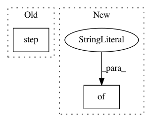

029fdb5624fafee03a59f49d86b676f25851febf,python/baseline/tf/tfy.py,,show_examples_tf,#Any#Any#Any#Any#Any#Any#Any#Any#Any#Any#,119
Before Change
for j in range(mxlen):
dst_i[0, j] = next_value
tgt_len_i = np.array([j+1])
output = model.step(src_i, src_len_i, dst_i, tgt_len_i)[j]
if sample is False:
next_value = np.argmax(output)
else:
After Change
for j in range(mxlen):
dst_i[0, j] = next_value
tgt_len_i = np.array([j+1])
output = model.step({"src": src_i, "src_len": src_len_i, "dst": dst_i, "dst_len": tgt_len_i})[j]
if sample is False:
next_value = np.argmax(output)
else:
In pattern: SUPERPATTERN
Frequency: 3
Non-data size: 2
Instances
Project Name: dpressel/mead-baseline
Commit Name: 029fdb5624fafee03a59f49d86b676f25851febf
Time: 2017-11-22
Author: dpressel@gmail.com
File Name: python/baseline/tf/tfy.py
Class Name:
Method Name: show_examples_tf
Project Name: flow-project/flow
Commit Name: d6ee34c979aaef712809f77d9c5693ba0090633a
Time: 2017-02-20
Author: kanaadp@gmail.com
File Name: cistar-dev/build-tester.py
Class Name:
Method Name:
Project Name: cornellius-gp/gpytorch
Commit Name: c63cc933782e2de32c9fe74c18b337b2bbe0f242
Time: 2018-07-19
Author: jrg365@cornell.edu
File Name: test/examples/test_kissgp_variational_regression.py
Class Name: TestKissGPVariationalRegression
Method Name: test_kissgp_gp_mean_abs_error